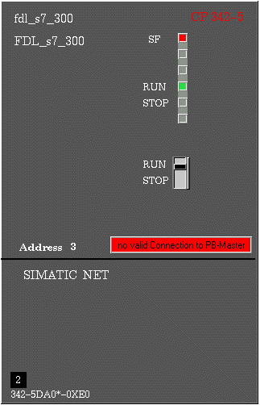
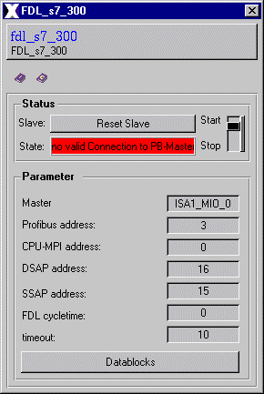
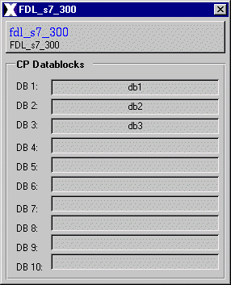
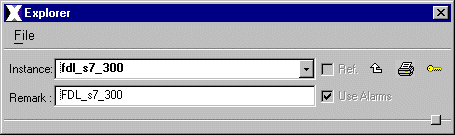
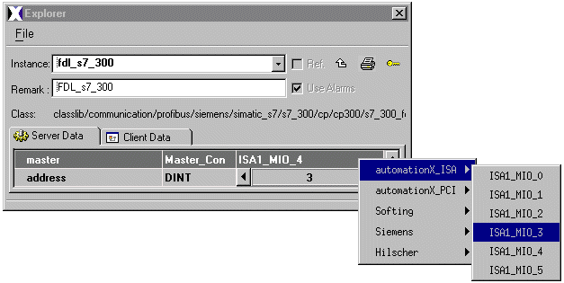
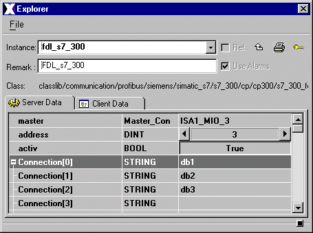
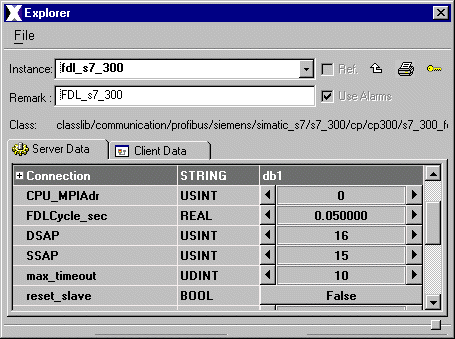

| Siemens S7 CP300 FDL |
The CP 300 FDL communicates with automationX
via FDL.
Features | lnstallation
|
User
Interface | Implementation Notes
The class CP 300 FDL is comprised
of the following components (files):
| Class Component | Description | File Name(s) |
| Class Color File | Includes some class specific color definitions. | s7_300_fdl.color |
| Class File | Includes the process picture representation and any popup menus. | s7_300_fdl.symbol
|
| Enumerator Files | Difines the enumerator for the class | s7_300_fdl.enum |
| Graphic Files | Class Specific Graphic Files for both, class definition and documentation. | axclassdocu16.bmp
axclassdocu_grey16.bmp axinstancedocu16.bmp axinstancedocu_grey_16.bmp (and some documentation pixel maps) |
| HTML-Document | HTML document for Online Help. | s7_300_fdl.htm |
Installation: The above listed files
must be copied into a common sub-directory within the project's "classlib"
directory. The name of the common directory can be chosen freely.
Features | lnstallation | User Interface | Implementation Notes
The s7_300_fdl graphical representation displays the unique name identifier ($Instance) on the top of the graphical representation. In the middle of the graphical representation the address and the actual status are displayed.
In the upper right corner of the graphical
representation can be found theService Fault display(SF), the Run display
(RUN) , the Stop display (STOP) and a switch to activate or deactivate
the cp.
| Indication | State | Condition |
| Service Fault
(SF) |
red | Configuration is not the same as defined in the PLC |
| RUN | green | The cp is activ |
| STOP | red | The cp is not activ |

Figure 1: Graphical Representation
Figure 2 shows the Address Popup, which is invoked by selecting the graphical representation.
In the Status section you can reset the communication and start and stop it. Also the actual state is displayed.
In the Parameter section the necessary
parameters for the communication are displayed. By selectin the button
Datablocks the Datablock configuration poup shown in Figure 3 is invoked.

Figure 2: The Address PopUp
Figure 3 shows Datablock configuration poup where you can see which datablocks are connected.

Figure 3: Datablock configuration poup
Features | lnstallation
|
User
Interface | Implementation Notes
How to configure the
FDL Instance
Step 1:
Select the S7 cp300 FDL class and drop
an instance of it into the picture window
Step 2:
With the instance selected, enter a unique
instance name and remark in the declaration field, in the configuration
panel.

Figure 4: Declaration for
the Profibus Master
Step3:
Open the Server Data tab. Find the resource
called "master" in the data list. Click the value field with the left mouse
button.
Automationx automatically detects the master and present it in a drop down list.
Choose the master name from the list.
Now set the "address" in the Server Data list. Use the increment/decrement arrows to set the address number of the instance.

Figure5: Assign the master
and set the address
Step 4:
Connect the necessary datablocks to your
instance. Type in the instancenames of them into the connection variable.

Figure 6: Connection of datablocks
Step 5:
Now set the communication parameters of
your cp 300 FDL shown in Figure 7.
CPU MPI address, FDL cycle time [sec],
DSAP, SSAP, maximum timeout.

Figure 6: Parameter settings
Features | lnstallation
|
User
Interface | Implementation Notes